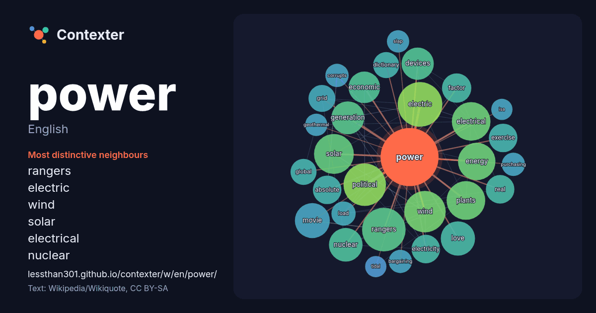

English · popular word
power
The words found around it in 1741 instances from English Wikipedia, Wikiquote and Hacker News.

Most distinctive neighbours
- rangers 36×
- electric 31×
- wind 29×
- solar 29×
- electrical 28×
- nuclear 19×
- generation 18×
- energy 17×
- absolute 17×
- devices 16×
- electricity 16×
- grid 15×
- exercise 15×
- movie 15×
- dictionary 15×
- plants 14×
- political 13×
- factor 13×
- bargaining 13×
- corrupts 12×
× = how many times more often than in general English Wikipedia text.
Most frequent neighbours
- american 52
- electric 44
- station 44
- rangers 42
- political 40
- wind 38
- solar 35
- electrical 33
- plants 33
- energy 31
- system 31
- album 28
- term 28
- movie 27
- love 26
- state 26
- nuclear 25
- generation 24
- born 23
- devices 23
In context
- Look up power in Wiktionary, the free dictionary. Power may refer to: Power (physics), meaning "rate of doing work" Engine power, the power put out by Wikipedia snippets · Power
- The Power may refer to: The Power (1968 film), an American science fiction thriller film based on the novel by Frank M. Robinson The Power (1984 film) Wikipedia snippets · The Power
- William Steven Power (born 1 March 1981) is an Australian and American racing driver who competes in the IndyCar Series, driving the No. 26 Dallara-Honda Wikipedia snippets · Will Power
- The will to power (German: der Wille zur Macht) is the core concept in the philosophy of Friedrich Nietzsche. The will to power describes what Nietzsche Wikipedia snippets · Will to power
- Wind power is the use of wind energy to generate useful work. Historically, wind power was used by sails, windmills and windpumps, but today it is mostly Wikipedia snippets · Wind power
- Power Rangers is an American media franchise built around a superhero television series. The first Power Rangers entry, Mighty Morphin Power Rangers, produced Wikipedia snippets · Power Rangers
- Power pop is a subgenre of rock music and a form of pop rock based on the early music of bands such as the Beach Boys, the Beatles, the Byrds, and the Wikipedia snippets · Power pop
- The Power Universe (or Power franchise) is an American media franchise of television crime drama series created by Courtney A. Kemp in collaboration with Wikipedia snippets · Power Universe
More English words
- art
- autumn
- bell
- bread
- bridge
- cat
- city
- climate
- clock
- death
- desert
- dog
- family
- food
- forest
- garden
- god
- gold
- health
- heart
- history
- honey
- horse
- island
- language
- life
- map
- mirror
- money
- mother
- mountain
- nature
- rain
- road
- salt
- science
- shadow
- silence
- song
- star
- storm
- summer
- tea
- time
- train
- truth
- water
- winter
- work
Precomputed on 2026-10-09 with default settings (±5 words, medium corpus). The interactive map can refresh it with live data.